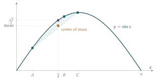

A function \(\mathrm{f}(x)\) is said to be concave on some interval if \(\mathrm{f}''(x) < 0\) in that interval. Show that \(\sin x\) is concave for \(0 < x < \pi\) and that \(\ln x\) is concave for \(x > 0\).
Let \(\mathrm{f}(x)\) be concave on a given interval and let \(x_1, x_2, \ldots, x_n\) lie in the interval. Jensen’s inequality states that \[\frac1n \sum_{k=1}^{n} \mathrm{f}(x_k) \leq \mathrm{f}\left( \frac1n \sum_{k=1}^{n} x_k \right)\] and that equality holds if and only if \(x_1 = x_2 = \cdots = x_n\). You may use this result without proving it.
Given that \(A\), \(B\) and \(C\) are angles of a triangle, show that \[\sin A + \sin B + \sin C \leq \frac{3\sqrt3}{2}.\]
By choosing a suitable function \(\mathrm{f}\), prove that \[\sqrt[n]{t_1 t_2 \cdots t_n} \leq \frac{t_1 + t_2 + \cdots + t_n}{n}\] for any positive integer \(n\) and for any positive numbers \(t_1, t_2, \ldots, t_n\).
Hence:
show that \(x^4 + y^4 + z^4 + 16 \geq 8xyz\), where \(x\), \(y\) and \(z\) are any positive numbers;
find the minimum value of \(x^5 + y^5 + z^5 - 5xyz\), where \(x\), \(y\) and \(z\) are any positive numbers.
The hook
In Section 3.2 we proved AM–GM with a clever induction. Here it falls out in one line, as a special case of something much bigger. The bigger thing is concavity: the shape of a curve that bends downwards, like the top of a hill. A single geometric fact about such curves, that the curve lies above its chords, turns out to prove a startling range of inequalities, from a fact about triangles to AM–GM to inequalities in probability, information theory and economics.
At university this idea becomes convexity, and it is one of the great unifying themes of modern mathematics. Whole subjects, such as convex optimisation, are built on it.
Before you start
Draw a curve that bends downwards, such as \(y = \sin x\) on \((0, \pi)\). Mark two points on it and join them with a straight line. Is the chord above or below the curve?
Below. For a concave curve, every chord lies below the curve between its endpoints. The average of two function values is the height of the midpoint of the chord; the function value at the average is the height of the curve above that midpoint. So “chord below curve” is exactly Jensen’s inequality for \(n = 2\): \[\frac{\mathrm{f}(x_1) + \mathrm{f}(x_2)}{2} \leq \mathrm{f}\left( \frac{x_1 + x_2}{2} \right).\] For \(n\) points, the average of the points \((x_k, \mathrm{f}(x_k))\) is their centre of mass, which lies inside the region under the curve, so it is below the curve too (Figure 3.3.1).
Working it through
Stage 1 Checking concavity
\(\frac{\mathrm{d}^2}{\mathrm{d}x^2}\sin x = -\sin x < 0\) for \(0 < x < \pi\), and \(\frac{\mathrm{d}^2}{\mathrm{d}x^2}\ln x = -\frac{1}{x^2} < 0\) for \(x > 0\).■
Stage 2 Triangles
Which function, which points, and what is their average? Do the angles of a triangle lie in an interval where the function is concave?
Take \(\mathrm{f}(x) = \sin x\) and the three points \(A, B, C\). Each is strictly between \(0\) and \(\pi\), where \(\sin\) is concave, and their average is \(\frac{A + B + C}{3} = \frac{\pi}{3}\). Jensen gives \[\frac{\sin A + \sin B + \sin C}{3} \leq \sin\frac{\pi}{3} = \frac{\sqrt3}{2},\] so \(\sin A + \sin B + \sin C \leq \frac{3\sqrt3}{2}\), with equality exactly for the equilateral triangle.■

Stage 3 AM–GM in one line
AM–GM compares a product with a sum. Which concave function turns products into sums?
The logarithm. Apply Jensen to \(\mathrm{f} = \ln\) and the positive numbers \(t_1, \ldots, t_n\): \[\frac{\ln t_1 + \cdots + \ln t_n}{n} \leq \ln\left( \frac{t_1 + \cdots + t_n}{n} \right).\] The left-hand side is \(\ln\bigl(\sqrt[n]{t_1 \cdots t_n}\bigr)\). Since \(\ln\) is increasing, we can remove it from both sides, and that is AM–GM. Equality holds exactly when all the \(t_k\) are equal.■
Stage 4 Using AM–GM
For (a), the left-hand side is a sum of four terms and the right-hand side contains a product of three variables. How many terms should you apply AM–GM to, and why does the \(16\) help?
Apply AM–GM to the four positive numbers \(x^4\), \(y^4\), \(z^4\), \(16\): \[\frac{x^4 + y^4 + z^4 + 16}{4} \geq \sqrt[4]{16\,x^4 y^4 z^4} = 2xyz.\] Multiplying by \(4\) gives \(x^4 + y^4 + z^4 + 16 \geq 8xyz\).■
Now find the minimum of \(x^5 + y^5 + z^5 - 5xyz\). (Hint: you want a fifth root of \(x^5y^5z^5\), so you need five numbers. What should the other two be?)
Apply AM–GM to \(x^5, y^5, z^5, 1, 1\): \[\frac{x^5 + y^5 + z^5 + 1 + 1}{5} \geq \sqrt[5]{x^5y^5z^5} = xyz,\] so \(x^5 + y^5 + z^5 - 5xyz \geq -2\). Equality holds when \(x^5 = y^5 = z^5 = 1\), that is, \(x = y = z = 1\), where the expression is \(3 - 5 = -2\). So the minimum value is \(-2\).■
Notice how the equality condition does double duty: it shows the bound is actually attained, so \(-2\) is the minimum and not just a lower bound.
Looking back
One idea, many inequalities. A geometric fact about concave curves gave a result about triangles and AM–GM, with no calculation beyond checking a second derivative.
Choose the function and the points. Using Jensen means deciding which function to apply it to and at which points. The logarithm, which turns products into sums, is a favourite.
Pad to fit. In (b), adding two \(1\)s made the AM–GM fit the problem, just as padding with the average did in Section 3.2.
What’s really going on
At university the standard definition of a convex function (the upside-down version of concave) does not mention derivatives at all: \(\mathrm{f}\) is convex if \[\mathrm{f}\bigl(t x_1 + (1-t)x_2\bigr) \leq t\,\mathrm{f}(x_1) + (1-t)\,\mathrm{f}(x_2) \qquad\text{for all } x_1, x_2 \text{ and } 0 \leq t \leq 1,\] which says exactly that chords lie above the curve. This definition makes sense for functions that are not differentiable, such as \(|x|\), and for functions of many variables. The Danish engineer and mathematician Johan Jensen made convex functions a subject in their own right in 1906, with the inequality that bears his name.
Convexity everywhere
Convexity appears throughout mathematics and its applications.
Probability. Jensen’s inequality says that for a concave \(\mathrm{f}\) and any random variable \(X\), \(\mathrm{E}[\mathrm{f}(X)] \leq \mathrm{f}(\mathrm{E}[X])\). In economics, with \(\mathrm{f}\) a concave “utility” function, this explains why people prefer a certain £100 to a fifty-fifty gamble on £0 or £200, and why insurance exists.
Information theory. The proof that entropy is maximised by the uniform distribution, which underlies data compression, is Jensen’s inequality for \(\ln\).
Optimisation. A convex function has no local minima except the global one, so “walk downhill” always finds the best answer. This is why convex optimisation problems can be solved efficiently, and why so much effort goes into recasting problems in convex form.
In Section 3.4 we will see a different side of convexity: a geometric duality between a function and its inverse.
The thinking skill
When several results have similar proofs, look for the single principle behind them. Then prove the principle once and apply it many times.
AM–GM, the triangle inequality for sines, and many others are all instances of “a concave curve lies above its chords”. Recognising the principle turns a collection of tricks into a method.
Try this next
The definition. (From STEP II, 2018.) Draw a sketch illustrating the chord definition of concavity in the box above. Explain why a function with \(\mathrm{f}''(x) < 0\) satisfies it. Then, by choosing \(t = \frac13\), \(x_1 = u\) and \(x_2 = \frac{v + w}{2}\) suitably, show that a concave function satisfies Jensen’s inequality for three points.
A product of sines. (From STEP II, 2018.) By considering \(\ln(\sin x)\), show that if \(A\), \(B\), \(C\) are the angles of a triangle then \(\sin A \sin B \sin C \leq \frac{3\sqrt3}{8}\).
Acute triangles. Show that \(\tan x\) is convex on \((0, \frac\pi2)\), and deduce that in an acute-angled triangle, \(\tan A + \tan B + \tan C \geq 3\sqrt3\).
Power means. Show that \(x^2\) is convex, and deduce that \(\left(\frac{a_1 + \cdots + a_n}{n}\right)^2 \leq \frac{a_1^2 + \cdots + a_n^2}{n}\). Interpret this as a statement about the variance of a set of numbers.
Further reading
J. Michael Steele, The Cauchy–Schwarz Master Class (Cambridge University Press). Chapter 6 is about convexity and Jensen’s inequality.
Claudi Alsina & Roger Nelsen, When Less Is More: Visualizing Basic Inequalities (Mathematical Association of America). Inequalities proved by pictures, many of them using convexity.
Stephen Boyd & Lieven Vandenberghe, Convex Optimization (Cambridge University Press). A modern classic, free online; the first chapters show why convexity matters in practice.